Cover pages Toggle Cover Pages
- 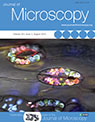
-
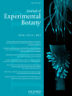
On the relationship between endoreduplication and collet hair initiation and tip growth, as determined using six Arabidopsis thaliana root-hair mutants
Cover illustration: Cover illustration: CLSM-based image of DAPI-staining collet region of two Arabidopsis thaliana root-hair mutants. (Top) eto1 mutant produces long hairs with elongated nuclei, similar to wild type. (Bottom) scn1 mutant produces short and rounded hairs with round nuclei. Image and layout by Elwira Sliwinska.
— http://jxb.oxfordjournals.org/content/66/11.cover-expansion
-
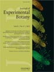
Synchronously developing collet hairs in Arabidopsis thaliana provide an easily accessible system for studying nuclear movement and endoreduplication
Cover illustration: The cover shows sequential stages of hair development in the collet region of an Arabidopsis seedling simultaneously expressing nuclear-localized GFP and a plasma-membrane-targeted YFP. Sliwinska et al. (pages 4165-4178) have used a combination of long-term time-lapse imaging and flow cytometry to demonstrate that synchronously developing collet hairs provide a robust and readily accessible system for understanding endoreduplication and nuclear behaviour in plants. Image design by Jaideep Mathur and Elwira Sliwinska.
— http://jxb.oxfordjournals.org/content/63/11.cover-expansion
-
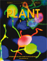
STROMULES DO NOT FORM PLASTID NETWORKS?
Stromules are tentacle-like protrusions of plastids that have been hypothesized to connect individual plastids and shuttle molecules between them. Schattat et al. (pages 1465—1477) re-examine this hypothesis using a photoconvertible fluorescent protein, which enabled differential coloring of the plastids in a cell, and directly monitoring the putative transfer of fluorescent proteins between plastids. Using this technique, the authors show that stromules extended by independent plastids do not fuse or allow exchange of fluorescent proteins between plastids. The cover image shows the differential coloring of plastids and their stromules in leaf epidermal cells. Chlorophyll autofluorescence is rendered in blue.
- 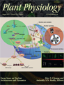
-
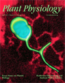
Sporadically, plastids extend and retract stroma-filled tubules called "stromules" that branch and form polygons. Schattat et al. (1667—1677) visualized stromules and the neighboring endoplasmic reticulum (ER) simultaneously and observed a high degree of coincidence in their dynamic behavior. Their findings open new avenues for understanding mechanisms of transfer and exchange of lipids and metabolites between plastids and the ER. The cover picture shows a three-dimensional volume rendered ferredoxin NADP(H) oxidoreductase-enhanced green fluorescent protein-labeled chloroplast in a confocal image with stromule branches extending along the red fluorescent protein-HDEL-highlighted ER. Image and volume rendering by Martin Schattat and Kiah Barton.
-
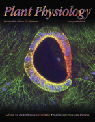
Photoconvertible fluorescent proteins are a recent addition to the cell biologists' toolbox.Mathur et al. (pp. 1573—1587) describe several subcellular targeted green-to-red photoconvertible mEosFP probes and discuss their potential applications and caveats. The cover image, taken by Dr. Jaideep Mathur, shows a pair of guard cells from an Arabidopsis plant expressing mEosFP targeted to cortical microtubules. The cells were exposed to an asymmetrically localized beam of violet-blue light for creating the range of hues that is achievable through photoconversion of the green form of mEosFP. Complete photoconversion results in red color, whereas orangeyellow shades represent partial photoconversion. Chlorophyll autofluorescence is clearly discriminated from mEosFP fluorescence and depicted in blue.
— http://www.plantphysiol.org/content/vol154/issue4/cover.dtl
- 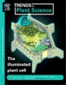
- 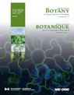
- 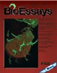
- 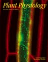
- 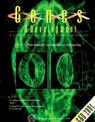
- 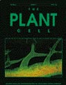
Peer Reviewed Papers Toggle Abstracts
- 78. Membrane contacts with the endoplasmic reticulum modulate plastid morphology and behaviour.Frontiers in Plant Science-Plant Cell Biology 2023.14:1293906. doi: 10.3389/fpls.2023.1293906
- Jaideep Mathur, Kunjumon TK, Mammone A and Neeta Mathur
- Plastid behaviour often occurs in tandem with endoplasmic reticulum (ER) dynamics. In order to understand the underlying basis for such linked behaviour we have used time-lapse imaging-based analysis of plastid movement and pleomorphy, including the extension and retraction of stromules. Stable transgenic plants that simultaneously express fluorescent fusion proteins targeted to the plastid stroma, and the ER along with BnCLIP1- eGFP, an independent plastid envelope localized membrane contact site (MCS) marker were utilized. Our experiments strongly suggest that transient MCS formed between the plastid envelope and the ER are responsible for their concomitant behaviour.
- 77. The ER Is a Common Mediator for the Behavior and Interactions of Other Organelles.Frontiers in Plant Science-Plant Cell Biology 2022. 13:846970. doi: 10.3389/fpls.2022.846970
- Jaideep Mathur, Olivia Friesen Kroeker, Mariann Lobbezoo and Neeta Mathur
- Optimal functioning of a plant cell depends upon the efficient exchange of genetic information, ions, proteins and metabolites between the different organelles. Intuitively, increased proximity between organelles would be expected to play an important role in facilitating exchanges between them. However, it remains to be seen whether under normal, relatively non-stressed conditions organelles maintain close proximity at all. Moreover, does interactivity involve direct and frequent physical contact between the different organelles? Further, many organelles transition between spherical and tubular forms or sporadically produce thin tubular extensions, but it remains unclear whether changes in organelle morphology play a role in increasing their interactivity. Here, using targeted multicolored fluorescent fusion proteins, we report observations on the spatiotemporal relationship between plastids, mitochondria, peroxisomes and the endoplasmic reticulum in living plant cells. Under normal conditions of growth, we observe that the smaller organelles do not establish direct, physical contacts with each other but, irrespective of their individual form they all maintain intimate connectivity with the ER. Proximity between organelles does increase in response to stress through concomitant alterations in ER dynamics. Significantly, even under increased proximity the ER still remains sandwiched between the different organelles. Our observations provide strong live-imaging-based evidence for the ER acting as a common mediator in interactions between other organelles.
- 76. Organelle extensions in plant cells. Plant Physiology. 2021. 185:593-607.doi:10.1093/plphys/kiaa055
- Jaideep Mathur
- Cell walls lock each cell in a specific position within the supra-organization of a plant. Despite its fixed location, each cell must be able to sense alterations in its immediate environment and respond rapidly to ensure the optimal functioning, continued growth and development, and eventual long-term survival of the plant. The ultra-structural detail that underlies our present understanding of the plant cell has largely been acquired from fixed and processed material that does not allow an appreciation of the dynamic nature of sub-cellular events in the cell. In recent years, fluorescent protein-aided imaging of living plant cells has added to our understanding of the dynamic nature of the plant cell. One of the major outcomes of live imaging of plant cells is the growing appreciation that organelle shapes are not fixed, and many organelles extend their surface transiently in rapid response to environmental stimuli. In many cases, the extensions appear as tubules extending from the main organelle. Specific terms such as stromules from plastids, matrixules from mitochondria, and peroxules from peroxisomes have been coined to describe the extensions. Here, we review our present understanding of organelle extensions and discuss how they may play potential roles in maintaining cellular homeostasis in plant cells.
- 75. Morphology, behaviour and interactions of organelles. Plant Science 2020. 301:110662. doi: 10.1016/j.plantsci.2020.110662.
- Jaideep Mathur
- High quality transmission electron micrographs have played a major role in shaping our views on organelles in plant cells. However, these snapshots of dead, fixed and sectioned tissue do not automatically convey an appreciation of the dynamic nature of organelles in living cells. Advances in the imaging of subcellular structures in living cells using multicoloured, targeted fluorescent proteins reveal considerable changes in organelle pleomorphy that might be limited to small regions of the cell. The fresh data and insights also challenge several existing ideas on organelle behaviour and interactivity. Here, using succinct examples from plastids, mitochondria, peroxisomes, and the endoplasmic reticulum I present an evolving view of subcellular dynamics in the plant cell.
- 74. Plastid envelope-localized proteins exhibit a stochastic spatiotemporal relationship to stromules. Frontiers in Plant Science-Plant Cell Biology 2018 doi: 10.3389/fpls.2018.00754.
- Kathleen Delfosse, Michael R Wozny, Kiah Ainsley Barton, Neeta Mathur, Nigel Griffiths, Jaideep Mathur
- Plastids in the viridiplantae sporadically form thin tubules called stromules that increase the interactive surface between the plastid and the surrounding cytoplasm. Several recent publications that report observations of certain proteins localizing to the extensions have then used the observations to suggest stromule-specific functions. The mechanisms by which specific localizations on these transient and sporadically formed extensions might occur remain unclear. Previous studies have yet to address the spatiotemporal relationship between a particular protein localization pattern and its distribution on an extended stromules and / or the plastid body. Here, we have used discrete protein patches found in several transgenic plants as fiducial markers to investigate this relationship. While we consider the inner plastid envelope-membrane localized protein patches of the GLUCOSE 6-PHOSPHATE / PHOSPHATE TRANSLOCATOR1 and the TRIOSE-PHOSPHATE/ PHOSPHATE TRANSLOCATOR 1 as artefacts of fluorescent fusion protein over-expression, stromule formation is not compromised in the respective stable transgenic lines that maintain normal growth and development. Our analysis of chloroplasts in the transgenic lines in the Arabidopsis Columbia background, and in the arc6 mutant, under stromule-inducing conditions shows that the possibility of finding a particular protein-enriched domain on an extended stromule or on a region of the main plastid body is stochastic. Our observations provide insights on the behaviour of chloroplasts, the relationship between stromules and the plastid-body and strongly challenge claims of stromule-specific functions based solely upon protein localization to plastid extensions.
- 73. Novel fluorochromes label tonoplast in living plant cells and reveal changes in vacuolar organization after treatment with protein phosphatase inhibitors. PROTOPLASMA 2017 doi: 10.1007/s00709-017-1190-0.
- Miklós Nagy, Sándor Kéki, Dávid Rácz, Jaideep Mathur, György Vereb, Tamás Garda, Márta M-Hamvas, François Chaumont, Károly Bóka, Béla Böddi, Csongor Freytag, Gábor Vasas, Csaba Máthé
- The recently synthesized isocyanonaphtalene derivatives ACAIN and CACAIN are fluorochromes excitable at wavelengths of around 366 nm and bind cysteine-rich proteins with hydrophobic motifs. We show that these compounds preferentially label tonoplasts in living Arabidopsis and tobacco (Nicotiana tabacum SR1) cells. ACAIN-labeled membranes co-localized with the GFP signal in plants expressing GFP-δ-TIP (TIP2;1) (a tonoplast aquaporin) fusion protein. ACAIN preserved the dynamics of vacuolar structures. tip2;1 and triple tip1;1-tip1;2-tip2;1 knockout mutants showed weaker ACAIN signal in tonoplasts. The fluorochrome is also suitable for the labeling and detection of specific (cysteine-rich, hydrophobic) proteins from crude cell protein extracts following SDS-PAGE and TIP mutants show altered labeling patterns; however, it appears that ACAIN labels a large variety of tonoplast proteins. ACAIN/CACAIN could be used for the detection of altered vacuolar organization induced by the heptapeptide natural toxin microcystin-LR (MCY-LR), a potent inhibitor of both type 1 and 2A protein phosphatases and a ROS inducer. As revealed both in plants with GFP-TIP2;1 fusions and in wild-type (Columbia) plants labeled with ACAIN/CACAIN, MCY-LR induces the formation of small vesicles, concomitantly with the absence of the large vegetative vacuoles characteristic for differentiated cells. TEM studies of MCY-LR-treated Arabidopsis cells proved the presence of multimembrane vesicles, with characteristics of lytic vacuoles or autophagosomes. Moreover, MCY-LR is a stronger inducer of small vesicle formation than okadaic acid (which inhibits preferentially PP2A) and tautomycin (which inhibits preferentially PP1). ACAIN and CACAIN emerge as useful novel tools to study plant vacuole biogenesis and programmed cell death.
- 72. Chloroplast behaviour and interactions with other organelles in Arabidopsis thaliana pavement cells. JOURNAL OF CELL SCIENCE 2018. 131(2) doi: 10.1242/jcs.202275.
- Kiah A. Barton, Michael R. Wozny, Neeta Mathur, Erica-Ashley Jaipargas, Jaideep Mathur
- Chloroplasts are a characteristic feature of green plants. Mesophyll cells possess the majority of chloroplasts and it is widely believed that with the exception of guard cells, the epidermal layer in most higher plants does not contain chloroplasts. However, recent observations on Arabidopsis have shown a population of chloroplasts in pavement cells that are smaller than mesophyll chloroplasts and have a high stroma to grana ratio. Here using stable transgenic lines expressing fluorescent proteins targeted to the plastid stroma, plasma membrane, endoplasmic reticulum, tonoplast, nucleus, mitochondria, peroxisomes, F-actin and microtubules we characterize the spatiotemporal relationships between the pavement cell chloroplasts (PCC) and their subcellular environment. Observations on the PCC suggest a source-sink relationship between the epidermal and the mesophyll layers and the Arabidopsis mutants glabra2 (gl2) and immutans (im) underscore their developmental plasticity. Our findings lay down the foundation for further investigations aimed at understanding the precise role and contributions of PCC in plant interactions with the environment.
- 71. Epidermal pavement cells of Arabidopsis thaliana have chloroplasts. PLANT PHYSIOLOGY 2016 171(2) 723-726.doi: 10.1104/pp.16.00608.
- Kiah Barton, M. Schattat, T. Jakob, G. Hause, C. Wilhelm, J. McKenna, C. Mathe, J. Runions, D. Van Damme, J. Mathur
- 70. AtMic60 Is Involved in Plant Mitochondria Lipid Trafficking and Is Part of a Large Complex. CURRENT BIOLOGY 2016 Feb 16 26(5) 627-639. doi: 10.1016/j.cub.2016.01.011.
- Michaud M, Gros V, Tardif M, Brugière S, Ferro M, Prinz WA, Toulmay A, Mathur J, Wozny M, Falconet D, Maréchal E, Block MA, Jouhet J.
- The mitochondrion is an organelle originating from an endosymbiotic event and playing a role in several fundamental processes such as energy production, metabolite syntheses, and programmed cell death. This organelle is delineated by two membranes whose synthesis requires an extensive exchange of phospholipids with other cellular organelles such as endoplasmic reticulum (ER) and vacuolar membranes in yeast. These transfers of phospholipids are thought to occur by a non-vesicular pathway at contact sites between two closely apposed membranes. In plants, little is known about the biogenesis of mitochondrial membranes. Contact sites between ER and mitochondria are suspected to play a similar role in phospholipid trafficking as in yeast, but this has never been demonstrated. In contrast, it has been shown that plastids are able to transfer lipids to mitochondria during phosphate starvation. However, the proteins involved in such transfer are still unknown. Here, we identified in Arabidopsis thaliana a large lipid-enriched complex called the mitochondrial transmembrane lipoprotein (MTL) complex. The MTL complex contains proteins located in the two mitochondrial membranes and conserved in all eukaryotic cells, such as the TOM complex and AtMic60, a component of the MICOS complex. We demonstrate that AtMic60 contributes to the export of phosphatidylethanolamine from mitochondria and the import of galactoglycerolipids from plastids during phosphate starvation. Furthermore, AtMic60 promotes lipid desorption from membranes, likely as an initial step for lipid transfer, and binds to Tom40, suggesting that AtMic60 could regulate the tethering between the inner and outer membranes of mitochondria.
- 69. High light intensity leads to increased peroxule-mitochondria interactions in plants. FRONTIERS IN CELL & DEVELOPMENTAL BIOLOGY, - Mitochondrial Research. 4:6.2016. doi: 10.3389/fcell.2016.00006.
- Erica-Ashley Jaipargas, Neeta Mathur, Firas Bou Daher, Geoffrey O Wasteneys, Jaideep Mathur
- Peroxules are thin protrusions from spherical peroxisomes produced under low levels of reactive oxygen species (ROS) stress. Whereas stress mitigation favours peroxule retraction, prolongation of the ROS stress leads to the elongation of the peroxisome into a tubular form. Subsequently, the elongated form becomes constricted through the binding of proteins such as dynamin related proteins 3A and 3B and eventually undergoes fission to increase the peroxisomal population within a cell. The events that occur in the short time window between peroxule initiation and the tubulation of the entire peroxisome have not been observed in living plant cells. Here, using fluorescent protein aided live-imaging, we show that peroxules are formed after only 4 minutes of high light (HL) irradiation during which there is a perceptible increase in the cytosolic levels of hydrogen peroxide. Using a stable, double transgenic line of Arabidopsis thaliana expressing a peroxisome targeted YFP and a mitochondrial targeted GFP probe, we observed sustained interactions between peroxules and small, spherical mitochondria. Further it was observed that the frequency of HL-induced interactions between peroxules and mitochondria increased in the Arabidopsis anisotropy1 mutant that has reduced cell wall crystallinity and where we show accumulation of higher H2O2 levels than wild type plants. Our observations suggest a testable model whereby peroxules act as interaction platforms for ROS-distressed mitochondria that may release membrane proteins and fission factors. These proteins might thus become easily available to peroxisomes and facilitate their proliferation for enhancing the ROS-combating capability of a plant cell.
- 68. Photo-convertible fluorescent proteins as tools for fresh insights on sub-cellular interactions in plants. JOURNAL OF MICROSCOPY January 2016. doi: 10.1111/jmi.12383.
- Nigel Griffiths, Erica-Ashley Jaipargas, Michael R. Wozny, Kiah A. Barton, Neeta Mathur, Kathleen Delfosse, Jaideep Mathur
- Optical highlighters comprise of photo-activatable, photo-switchable and photo- convertible fluorescent proteins and are relatively recent additions to the toolbox utilized for live cell imaging research. Here, we provide an overview of four photo-convertible fluorescent proteins (pcFP) that are being used in plant cell research: Eos, Kaede, Maple and Dendra2. Each of these proteins has a significant advantage over other optical highlighters since their green fluorescent, non-converted forms and red fluorescent converted forms are generally clearly visible at expression levels that do not appear to interfere with subcellular dynamics and plant development. These proteins have become increasingly useful for understanding the role of transient and sustained interactions between similar organelles. Tracking of single organelles after green-to-red conversion has provided novel insights on plastids and their stroma-filled extensions and on the formation of mega-mitochondria. Similarly colour recovery after photo- conversion has permitted the estimation of nuclear endo-reduplication events and is being developed further to image protein trafficking within the lumen of the endoplasmic reticulum. We have also applied photo-convertible proteins to create colour- differentiation between similar cell types to follow their development. Both the green and red fluorescent forms of these proteins are compatible with other commonly used single coloured FPs. This has allowed us to develop simultaneous visualization schemes for up to five types of organelles and investigate organelle interactivity. The advantages and caveats associated with the use of photo-convertible fluorescent proteins are discussed.
- 67. Fluorescent protein aided insights on plastids and their extensions: A critical appraisal. FRONTIERS IN PLANT SCIENCE - Plant Biotechnology: Advances in plastid biology and its applications. January 2016.
- Kathleen Delfosse, Michael R. Wozny, Erica-Ashley Jaipargas, Kiah A. Barton, Cole Anderson, Jaideep Mathur
- Multi-coloured fluorescent proteins targeted to plastids have provided new insights on the dynamic behaviour of these organelles and their interactions with other cytoplasmic components and compartments. Sub-plastidic components such as thylakoids, stroma, the inner and outer membranes of the plastid envelope, nucleoids, plastoglobuli and starch grains have been efficiently highlighted in living plant cells. In addition, stroma filled membrane extensions called stromules have drawn attention to the dynamic nature of the plastid and its interactions with the rest of the cell. Use of dual and triple fluorescent protein combinations has begun to reveal plastid interactions with mitochondria, the nucleus, the endoplasmic reticulum and F-actin and suggests integral roles of plastids in retrograde signalling, cell to cell communication as well as plant-pathogen interactions. While the rapid advances and insights achieved through fluorescent protein based research on plastids are commendable it is necessary to endorse meaningful observations but subject others to closer scrutiny. Here, in order to develop a better and more comprehensive understanding of plastids and their extensions we provide a critical appraisal of recent information that has been acquired using targeted fluorescent protein probes.
- 66. Mitochondrial pleomorphy in plant cells is driven by contiguous ER dynamics. FRONTIERS IN PLANT SCIENCE - Plant Cell Biology. September 2015.6:783 doi: 10.3389/fpls.2015.00783
- Erica-Ashley Jaipargas, Kiah A. Barton, Neeta Mathur, Jaideep Mathur
- Mitochondria are pleomorphic, double membrane-bound organelles involved in cellular energetics in all eukaryotes. Mitochondria in animal and yeast cells are typically tubular-reticulate structures and several micro-meters long but in green plants they are predominantly observed as 0.2–1.5μm punctae. While fission and fusion, through the coordinated activity of several conserved proteins, shapes mitochondria, the endoplasmic reticulum (ER) has recently been identified as an additional player in this process in yeast and mammalian cells. The mitochondria-ER relationship in plant cells remains largely uncharacterized. Here, through live-imaging of the entire range of mitochondria pleomorphy we uncover the underlying basis for the predominantly punctate mitochondrial form in plants. We demonstrate that mitochondrial morphology changes in response to light and cytosolic sugar levels in an ER mediated manner. Whereas, large ER polygons and low dynamics under dark conditions favor mitochondrial fusion and elongation, small ER polygons result in increased fission and predominantly small mitochondria. Hypoxia also reduces ER dynamics and increases mitochondrial fusion to produce giant mitochondria. By observing elongated mitochondria in normal plants and fission-impaired Arabidopsis nmt1-2 and drp3a mutants we also establish that thin extensions called matrixules and a beads-on-a-string mitochondrial phenotype are direct consequences of mitochondria-ER interactions.
- 65. Large Cellular Inclusions Accumulate in Arabidopsis Roots Exposed to Low-Sulfur Conditions. PLANT PHYSIOLOGY. Aug 2015; 168(4):1573-1589.
- Jackson TL, Baker GW, Wilks FR Jr, Popov VA, Mathur J, Benfey PN.
- Sulfur is vital for primary and secondary metabolism in plant roots. To understand the molecular and morphogenetic changes associated with loss of this key macronutrient, we grew Arabidopsis (Arabidopsis thaliana) seedlings in low-sulfur conditions. These conditions induced a cascade of cellular events that converged to produce a profound intracellular phenotype defined by large cytoplasmic inclusions. The inclusions, termed low-sulfur Pox, show cell type- and developmental zone-specific localization. Transcriptome analysis suggested that low sulfur causes dysfunction of the glutathione/ascorbate cycle, which reduces flavonoids. Genetic and biochemical evidence indicated that low-sulfur Pox are the result of peroxidase-catalyzed oxidation of quercetin in roots grown under sulfur-depleted conditions.
- 64. On the relationship between endoreduplication and collet hair initiation and tip growth, as determined using six Arabidopsis thaliana root-hair mutants. JOURNAL OF EXPERIMENTAL BOTANY. Jun 2015. 66(11) 3285-3295.
- Sliwinska E, Mathur J, Bewley JD.
- A positive correlation between nuclear DNA content and cell size, as postulated by the karyoplasmic theory, has been confirmed in many plant tissues. However, there is also evidence suggesting that there are exceptions. While in previous reports the cell size:ploidy relationship was studied in intact tissues containing cells of different sizes, here simultaneously developing single cells of collet hairs were used to study endoreduplication in Arabidopsis thaliana mutants that produce hairs of variable size and morphology. Endoreduplication in the root and collet zones of six different root-hair mutants was analysed before and after collet hair development using flow cytometry and confocal microscopy. Additionally, the changes in nuclear size (ploidy), shape, and movement in developing collet hairs of a hybrid between Arabidopsis transgenic line NLS-GFP-GUS and the rhd3 (root hair defective3) mutant were followed using time-lapse confocal microscopy. In this hybrid endoreduplication in the collet hairs was disturbed. However, based on the analyses of all mutants, no correlation was found between hair length and the ploidy of the cells in the collet and root regions. The results indicate that the karyoplasmic ratio is maintained at the beginning of collet-hair development, but tip growth proceeds in a DNA-amount-independent manner. The final size of a collet hair appears to be dependent more on genetic modifiers governing general cell physiology than on its DNA content.
- 63. A stable JAZ protein from peach mediates the transition from outcrossing to self-pollination. BMC BIOLOGY. Feb 2015. 13:11(DOI: 10.1186/s12915-015-0124-6).
- Sherif S, El-Sharkawy I, Mathur J, Ravindran P, Kumar P, Paliyath G, Jayasankar S.
- Variations in floral display represent one of the core features associated with the transition from allogamy to autogamy in angiosperms. The promotion of autogamy under stress conditions suggests the potential involvement of a signaling pathway with a dual role in both flower development and stress response. The jasmonic acid (JA) pathway is a plausible candidate to play such a role because of its involvement in many plant responses to environmental and developmental cues. In the present study, we used peach (Prunus persica L.) varieties with showy and non-showy flowers to investigate the role of JA (and JA signaling suppressors) in floral display.Our results show that PpJAZ1, a component of the JA signaling pathway in peach, regulates petal expansion during anthesis and promotes self-pollination. PpJAZ1 transcript levels were higher in petals of the non-showy flowers than those of showy flowers at anthesis. Moreover, the ectopic expression of PpJAZ1 in tobacco (Nicotiana tabacum L.) converted the showy, chasmogamous tobacco flowers into non-showy, cleistogamous flowers. Stability of PpJAZ1 was confirmed in vivo using PpJAZ1-GFP chimeric protein. PpJAZ1 inhibited JA-dependent processes in roots and leaves of transgenic plants, including induction of JA-response genes to mechanical wounding. However, the inhibitory effect of PpJAZ1 on JA-dependent fertility functions was weaker, indicating that PpJAZ1 regulates the spatial localization of JA signaling in different plant organs. Indeed, JA-related genes showed differential expression patterns in leaves and flowers of transgenic plants.Our results reveal that under stress conditions - for example, herbivore attacks -- stable JAZ proteins such as PpJAZ1 may alter JA signaling in different plant organs, resulting in autogamy as a reproductive assurance mechanism. This represents an additional mechanism by which plant hormone signaling can modulate a vital developmental process in response to stress.
- 62. The myth of interconnected plastids and related phenomena. PROTOPLASMA. Jan 2015. 252(1) 359-371.(DOI: 10.1007/s00709-014-0666-4).
- Martin H. Schattat, Kiah A. Barton and Jaideep Mathur
- Studies spread over nearly two and a half centuries have identified the primary plastid in autotrophic algae and plants as a pleomorphic, multifunctional organelle comprising of a double-membrane envelope enclosing an organization of internal membranes submerged in a watery stroma. All plastid units have been observed extending and retracting thin stroma-filled tubules named stromules sporadically. Observations on living plant cells often convey the impression that stromules connect two or more independent plastids with each other. When photo-bleaching techniques were used to suggest that macromolecules such as the green fluorescent protein could flow between already interconnected plastids, for many people this impression changed to conviction. However, it was noticed only recently that the concept of protein flow between plastids rests solely on the words "interconnected plastids" for which details have never been provided. We have critically reviewed botanical literature dating back to the 1880s for understanding this term and the phenomena that have become associated with it. We find that while meticulously detailed ontogenic studies spanning nearly 150 years have established the plastid as a singular unit organelle, there is no experimental support for the idea that interconnected plastids exist under normal conditions of growth and development. In this review, while we consider several possibilities that might allow a single elongated plastid to be misinterpreted as two or more interconnected plastids, our final conclusion is that the concept of direct protein flow between plastids is based on an unfounded assumption.
- 61. Agrobacterium-derived cytokinin influences plastid morphology and starch accumulation in Nicotiana benthamiana during transient assays. BMC PLANT BIOLOGY. 2014 May 9;14(1):127.
- Erickson JL, Ziegler J, Guevara D, Abel S, Klösgen RB, Mathur J, Rothstein SJ, Schattat MH.
- BACKGROUND Agrobacterium tumefaciens-based transient assays have become a common tool for answering questions related to protein localization and gene expression in a cellular context. The use of these assays assumes that the transiently transformed cells are observed under relatively authentic physiological conditions and maintain 'normal' sub-cellular behaviour. Although this premise is widely accepted, the question of whether
cellular organization and organelle morphology is altered in Agrobacterium-infiltrated cells has not been examined in detail. The first indications of an altered sub-cellular environment came from our observation that a common laboratory strain, GV3101(pMP90), caused a drastic increase in stromule frequency. Stromules, or 'stroma-filled-tubules' emanate from the surface of plastids and are sensitive to a variety of biotic and abiotic stresses. Starting from this observation, the
goal of our experiments was to further characterize the changes to the cell resulting from short-term bacterial infestation, and to identify the factor responsible for eliciting these changes.
RESULTS Using a protocol typical of transient assays we evaluated the impact of GV3101(pMP90) infiltration on chloroplast behaviour and morphology in Nicotiana benthamiana. Our experiments confirmed that GV3101(pMP90) consistently induces stromules and alters plastid position relative to the nucleus. These effects were found to be the result of strain-dependant secretion of cytokinin and its accumulation in the plant tissue. Bacterial production of the hormone was found to be dependant on the presence of a trans-zeatin synthase gene (tzs) located on the Ti plasmid of GV3101(pMP90). Bacteria-derived cytokinins were also correlated with changes to both soluble sugar level and starch accumulation.
CONCLUSION Although we have chosen to focus on how transient Agrobacterium infestation alters plastid based parameters, these changes to the morphology and position of a single organelle, combined with the measured increases in sugar and starch content, suggest global changes to cell physiology. This indicates that cells visualized during transient assays may not be as 'normal' as was previously assumed. Our results suggest that the impact of the bacteria can be minimized by choosing Agrobacterium strains devoid of the tzs gene, but that the alterations to sub-cellular organization and cell carbohydrate status cannot be completely avoided using this strategy. - Download PDF60. Fluorescent Protein Flow within Stromules. PLANT CELL. 2013 Aug;25(8):2771-2. doi: 10.1105/tpc.113.117416. Epub 2013 Aug 27.
- Mathur J, Barton KA, Schattat MH.
- Download PDF59. Simultaneous live-imaging of peroxisomes and the ER in plant cells suggests contiguity but no luminal continuity between the two organelles.Front. Physiol. 24 July 2013. 10.3389/fphys.2013.00196.
- Kiah Barton, Neeta Mathur and Jaideep Mathur
- Transmission electron micrographs of peroxisomes in diverse organisms, including plants, suggest their close association and even luminal connectivity with the endoplasmic reticulum (ER). After several decades of debate de novo peroxisome biogenesis from the ER is strongly favored in yeasts and mammals. Unfortunately many of the proteins whose transit through the ER constitutes a major evidence for peroxisome biogenesis from the ER do not exhibit a similar localization in plants. Consequently, at best the ER acts as a membrane source for peroxisome in plants. However, in addition to their de novo biogenesis from the ER an increase in peroxisome numbers also occurs through fission of existing peroxisomes. In recent years live-imaging has been used to visualize peroxisomes and the ER but the precise spatio-temporal relationship between the two organelles has not been well-explored. Here we present our assessment of the peroxisome-ER relationship through imaging of living Arabidopsis thaliana plants simultaneously expressing different color combinations of fluorescent proteins targeted to both organelles. Our observations on double transgenic wild type and a drp3a/apm1 mutant Arabidopsis plants suggest strong correlations between the dynamic behavior of peroxisomes and the neighboring ER. Although peroxisomes and ER are closely aligned there appears to be no luminal continuity between the two. Similarly, differentially colored elongated peroxisomes of a drp3a mutant expressing a photoconvertible peroxisomal matrix protein are unable to fuse and share luminal protein despite considerable intermingling. Substantiation of our observations is suggested through 3D iso-surface rendering of image stacks, which shows closed ended peroxisomes enmeshed among ER tubules possibly through membrane contact sites (MCS). Our observations support the idea that increase in peroxisome numbers in a plant cell occurs mainly through the fission of existing peroxisomes in an ER aided manner.
- 58. Organelle extensions in plant cells.JOURNAL OF INTEGRATIVE PLANT BIOLOGY. 2012.54(11).851-867.
- Mathur J, Mammone A, Barton K.
- Cell walls lock each cell in a specific position within the supra- organization of a plant. Despite its fixed location, each cell must be able to sense alterations in its immediate environment and respond rapidly to ensure the optimal functioning, continued growth and development, and eventual long-term survival of the plant. The ultra-structural detail that underlies our present understanding of the plant cell has largely been acquired from fixed and processed material that does not allow an appreciation of the dynamic nature of sub-cellular events in the cell. In recent years, fluorescent protein- aided imaging of living plant cells has added to our understanding of the dynamic nature of the plant cell. One of the major outcomesof live imaging of plant cells is the growing appreciation that organelle shapes are not fixed, and many organelles extend their surface transiently in rapid response to environmental stimuli. In many cases, the extensions appear as tubules extending from the main organelle. Specific terms such as stromules from plastids, matrixules from mitochondria, and peroxules from peroxisomes have been coined to describe the extensions. Here, we review our present understanding of organelle extensions and discuss how they may play potential roles in maintaining cellular homeostasis in plant cells.
- 57. New insights on stromules: Stroma filled tubules extended by independent plastids.PLANT SIGNALING AND BEHAVIOUR. 2012.7:9,1132-1137.
- Schattat MH, Klossgen RB, Mathur J.
- The recognition of stromules as sporadically extended stroma filled tubules from all kinds of plastids constitutes one of the major insights that resulted from the direct application of green fluorescent protein aided imaging of living plant cells. Observations of dynamic green fluorescent stromules strongly suggested that plastids frequently interact with each other while photo-bleaching of interconnected plastids indicated that proteins can move within the stroma filled tubules. These observations readily fit into the prevailing concept of the endosymbiogenic origins of plastids and provided stromules the status of conduits for inter-plastid communication and macromolecule transfer. However, experimental evidence obtained recently through the use of photoconvertible protein labeled stromules strongly supports plastid independence rather than their interconnectivity. Additional information on stress conditions inducing stromules and observations on their alignment with other organelles suggests that the major role of stromules is to increase the interactive surface of a plastid with the rest of the cytoplasm.
- 56. Secretory Pathway Research: The More Experimental Systems the Better.THE PLANT CELL. 2012.24.1316-1326.
- Denecke J, Aniento F, Frigerio L, Hawes C, Hwang I, Mathur J, Neuhaus J-M, Robinson DG.
- Transient gene expression, in plant protoplasts or specific plant tissues, is a key technique in plant molecular cell biology, aimed at exploring gene products and their modifications to examine functional subdomains, their interactions with other biomolecules, and their subcellular localization. Here, we highlight some of the major advantages and potential pitfalls of the most commonly used transient gene expression models and illustrate how ectopic expression and the use of dominant mutants can provide insights into protein function.
- Download PDF55. Differential coloring reveals that plastids do not form networks for exchanging macromolecules.THE PLANT CELL. 2012.24.1465-1477.
- Schattat MH, Griffiths S, Mathur N, Barton K, Wozny MR, Dunn N, Greenwood JS and Mathur J.
- Stroma-filled tubules named stromules are sporadic extensions of plastids. Earlier, photobleaching was used to demonstrate fluorescent protein diffusion between already interconnected plastids and formed the basis for suggesting that all plastids are able to form networks for exchanging macromolecules. However, a critical appraisal of literature shows that this conjecture is not supported by unequivocal experimental evidence. Here, using photoconvertible mEosFP, we created color differences between similar organelles that enabled us to distinguish clearly between organelle fusion and nonfusion events. Individual plastids, despite conveying a strong impression of interactivity and fusion, maintained well-defined boundaries and did not exchange fluorescent proteins. Moreover, the high pleomorphy of etioplasts from dark-grown seedlings, leucoplasts from roots, and assorted plastids in the accumulation and replication of chloroplasts5 (arc5), arc6, and phosphoglucomutase1 mutants of Arabidopsis thaliana suggested that a single plastid unit might be easily mistaken for interconnected plastids. Our observations provide succinct evidence to refute the long-standing dogma of interplastid connectivity. The ability to create and maintain a large number of unique biochemical factories in the form of singular plastids might be a key feature underlying the versatility of green plants as it provides increased internal diversity for them to combat a wide range of environmental fluctuations and stresses.
- 54. Synchronously developing collet hairs in Arabidopsis thaliana provide an easily accessible system for studying nuclear movement and endoreduplication. JOURNAL OF EXPERIMENTAL BOTANY. 2012.63(11).4165-4178.
- Sliwinska E, Mathur J, Bewley J Derek
- Early Arabidopsis thaliana seedling growth includes the highly synchronous development of hairs from every epidermal cell of the collet (the root-hypocotyl transition zone). The dynamics of collet hair growth, and accompanying nuclear movement and endoreduplication, were followed using a combination of different fluorescent probes for time-lapse imaging and flow cytometry. Using laser-scanning confocal microscopy on the double-transgenic Arabidopsis hybrid line NLS-GFP-GUS × YPM, there appeared to be a correlation between nuclear position and the cell tip during growth of the collet hair cells, as occurs in asynchronously developing root hairs. However, disruption of nuclear movement in the growing collet hairs using low concentrations of cytoskeletal inhibitors demonstrated that nuclear positioning close to the tip of the cell is not essential for tip-directed growth of the hair. Nuclear DNA content increases from 4C to 16C during development of the collet hairs. Following cessation of growth, nuclei moved to the base of the hairs and then their movement became asynchronous and limited. Co-visualization of RFP-highlighted prevacuolar vesicles and GFP-labelled nuclei showed that, whereas small vesicles allowed unimpeded nuclear movement within the hair, transient stops and directional reversals coincided with the presence of larger vesicles in close proximity to the nucleus. Arabidopsis collet hairs provide a robust, easily accessible, naturally synchronized population of single tip-growing cells that can be used as a model cell type for studying nuclear movement and endoreduplication.
- 53. Colour recovery after photoconversion of H2B::mEosFP allows detection of increased nuclear DNA content in developing plant cells. PLANT PHYSIOLOGY. 2012. 158(1) 95-106.
- Wozny M, Schattat MH, Mathur N, Barton K, Mathur J.
- Many higher plants are polysomatic whereby different cells possess variable amounts of nuclear DNA. The conditional triggering of endocycles results in higher nuclear DNA content (C-value) which in some cases has been correlated to increased cell size. While numerous multi-colored fluorescent protein (FP) probes have revealed the general behaviour of the nucleus and intra-nuclear components, direct visualization and estimation of changes in nuclear-DNA content in live cells during their development has not been possible. Recently, monomeric EosFP (mEosFP) has emerged as a useful photoconvertible protein whose colour changes irreversibly from a green to a red fluorescent form upon exposure to violet-blue light. The stability and irreversibility of red fluorescent mEosFP suggests that detection of green colour recovery would be possible as fresh mEosFP is produced after photo-conversion. Thus a ratiometric evaluation of the red and green forms of mEosFP following photoconversion could be used to estimate production of a core histone such as H2B during its concomitant synthesis with DNA in the S phase of the cell cycle. Here we present proof of concept observations on transgenic tobacco BY2 cells and Arabidopsis plants stably expressing H2B::mEosFP. In Arabidopsis seedlings an increase in green fluorescence is observed specifically in cells known to undergo endo-reduplication. The detection of changes in nuclear DNA content by correlating colour recovery of H2B::mEosFP after photoconversion is a novel approach involving a single fluorescent protein. The method has potential for facilitating detailed investigations on conditions that favor increased cell size and the development of polysomaty in plants.
- 52. Correlated behaviour implicates stromules in increasing the interactive surface between plastids and ER tubules. PLANT SIGNALING AND BEHAVIOUR. 2011. May 6(5) 715 -718.
- Martin H. Schattat, Kiah Barton and Jaideep Mathur.
- Stromules are extended by plastids but the underlying basis for their extension and retraction had not been understood until recently. Our live-imaging aided observations on coincident plastid stromule branching and ER tubule dynamics open out new areas of investigation relating to these rapid subcellular interactions. The addendum provides a testable hypothesis on the formation of stromules, which argues against the need for new membrane incorporation and suggests that stromal extensions might result from a remodeling of the plastid envelope membrane in an ER aided manner.
- 51. Plastid stromule branching coincides with contiguous ER dynamics. PLANT PHYSIOLOGY. 2011. Apr 155(4):1667-1677.
- Martin H. Schattat, Kiah Barton, Bianca Baudisch, Ralf B. Klossgen and Jaideep Mathur.
- Stromules are stroma-filled tubules extending from plastids whose rapid extension towards or retraction from other plastids has suggested a role in inter-plastidic communication and exchange of metabolites. Several studies point to sporadic dilations, kinks and branches occurring along stromule length but have not elucidated the underlying basis for these occurrences. Similarly, although specific details on interacting partners have been missing a consensus viewpoint suggests that stromules increase the interactive surface of a plastid with its cytoplasmic surroundings. Here, using live imaging we show that the behaviour of dynamic, pleomorphic stromules strongly coincides with that of cortical endoplasmic reticulum tubules. Co-visualization of fluorescent protein-highlighted stromules and the ER in diverse cell types clearly suggests correlative dynamics of the two membrane-bound compartments. The extension and retraction, as well as directional changes in stromule branches occur in tandem with the behaviour of neighbouring ER tubules. 3D and 4D volume rendering reveals that stromules that extend into cortical regions occupy channels between ER tubules possibly through multiple membrane contact sites. Our observations clearly depict coincidental stromule-ER behaviour and suggest that either the neighbouring ER tubules shape stromules directly or the behaviour of both ER and stromules is simultaneously dictated by a shared cytoskeleton-based mechanism. These new observations strongly implicate the ER membrane in interactions with stromules and suggest that their interacting surfaces might serve as major conduits for bidirectional exchange of ions, lipids and metabolites between the two organelles.
- 50. mEosFP based green to red photoconvertible subcellular probes for plants. PLANT PHYSIOLOGY. 154(4).1573-1587.
- Jaideep Mathur, Resmi Radhamony, Alison M. Sinclair, Ana Donoso, Natalie Dunn, Elyse Roach, Devon Radford, S. Mohammad P. Mohaghegh, David C. Logan, Ksenija Kokolic and Neeta Mathur.
- Photoconvertible fluorescent proteins (FPs) are recent additions to the biologists' toolbox for understanding the living cell. Like GFP, monomeric EosFP is bright green in colour but is efficiently photo-converted into a red fluorescent form using a mild violet-blue excitation. Here we report mEosFP-based probes that localize to the cytosol, plasma-membrane invaginations, endosomes, pre-vacuolar vesicles, vacuoles, the endoplasmic reticulum, Golgi bodies, mitochondria, peroxisomes and the two major cytoskeletal elements, F-actin and cortical microtubules. The mEosFP fusion proteins are smaller than GFP / RFP based probes and as demonstrated here provide several significant advantages for imaging of living plant cells. These include an ability to differentially colour label a single cell or a group of cells in a developing organ; selectively highlight a region of a cell or a sub-population of organelles and vesicles within a cell for tracking them and understanding spatiotemporal aspects of interactions between similar as well as different organelles. In addition, mEosFP probes introduce a milder alternative to FRAP whereby instead of photo bleaching, photoconversion followed by recovery of green fluorescence can be used for estimating subcellular dynamics. Most importantly the two fluorescent forms of mEosFP furnish bright internal controls during imaging experiments and are fully compatible with CFP, GFP, YFP and RFP fluorochromes for use in simultaneous, multi-colour labeling schemes. Photoconvertible mEosFP-based subcellular probes promise to usher in a much higher degree of precision into live imaging of plant cells than has been possible so far using single coloured FPs.
- 49. Ethylene receptor ETR2 controls trichome branching by regulating microtubule assembly in Arabidopsis thaliana. JOURNAL OF EXPERIMENTAL BOTANY. 2009. 60(13).3923-3933.
- JM Plett, J. Mathur and S. Regan.
- 48. Rapid peroxisomal responses to ROS suggest an alternative mechanistic model for post-biogenesis peroxisomal life cycle in plants. PLANT SIGNALING AND BEHAVIOUR. 2009. 4(8).787-789.
- J. Mathur.
- Plants adapt to and survive in some of the harshest environments. Their success can be ascribed to an ability to maintain an optimal subcellular redox environment. Peroxisomes, ubiquitous ROS producing and scavenging organelles in eukaryotes play an important role in cellular homeostasis. Recently the formation of thin membrane extensions called peroxules has provided further evidence for peroxisomal role in rapidly sensing and responding to alterations in subcellular ROS. Within a cell the transient extension and retraction of peroxules is asynchronous but takes place within seconds. Peroxules follow tracks defined by tubules of the endoplasmic reticulum and their formation does not appear to involve an elaborate transcriptional-translational machinery. Rather the rapidity of peroxisomal responses suggests ROS instigated membrane modifications aimed at local ROS scavenging or leading to peroxisome elongation prior to their fission for increasing peroxisome numbers within a cell. A model on post-biogenesis peroxisomal life-cycle taking cognizance of rapid peroxisomal responses is presented.
- 47. Peroxule extension over ER defined paths constitutes a rapid subcellular response to hydroxyl stress. THE PLANT JOURNAL. 2009 59(2).231-242.
- Sinclair AM, Trobacher CP, Mathur N, Greenwood JS, Mathur J.
- Plants survive against myriad environmental odds while remaining rooted to a spot. The time scale in which plant cells can respond to environmental cues is seldom appreciated. Fluorescent protein aided live-imaging of peroxisomes reveals that they respond within seconds of exposure to hydrogen peroxide and hydroxyl radicals by producing dynamic extensions called peroxules. Observations of the Arabidopsis flu mutant and treatments with xenobiotics eliciting singlet oxygen and superoxide reactive oxygen species suggest that the observed responses are specific for hydroxyl radicals. Prolonged exposure to hydroxyl radicals inhibits peroxule extension and instead causes motile and spherical peroxisomes in a cell to become immotile and elongate several folds. Expression of a photo-convertible EosFP-PTS1 demonstrates that vermiform peroxisomes result from rapid stretching of individual peroxisomes while the subsequent 'beads-on-a-string' morphology results from differential protein distribution within an elongated tubule. Over time the beads in elongated peroxisomes also extend peroxules randomly before undergoing asynchronous, asymmetrical fission. Peroxule extension does not appear to involve cytoskeletal elements directly but is closely aligned with and reflects the dynamics of ER tubules. Peroxisomal responses reveal a rapidly invoked sub-cellular machinery involved in recognition of hydroxyl stress thresholds and its possible remediation locally through extension of peroxules or globally by increasing peroxisome numbers. A matrix protein retro-flow mechanism that supports peroxisome-ER connectivity in plant cells is suggested.
- Download PDF46. Visualizing the actin cytoskeleton in living plant cells using a photo-convertible mEos::FABD-mTn fluorescent fusion protein. PLANT METHODS. 4:21:2008.
- Mike Schenkel, Alison M Sinclair, Daniel Johnstone, J Derek Bewley and Jaideep Mathur.
- The actin cytoskeleton responds quickly to diverse stimuli and plays numerous roles in cellular signalling, organelle motility and subcellular compartmentation during plant growth and development. Molecular and cell biological tools that can facilitate visualization of actin organization and dynamics in a minimally invasive manner are essential for understanding this fundamental component of the living cell.
A novel, monomeric (m) Eos-fluorescent protein derived from the coral Lobophyllia hemprichii was assessed for its green to red photo-convertibility in plant cells by creating mEosFP-cytosolic. mEosFP was fused to the F-(filamentous)-Actin Binding Domain of the mammalian Talin gene to create mEosFP::FABDmTalin. Photo-conversion, visualization and colour quantification protocols were developed for EosFP targeted to the F-actin cytoskeleton. Rapid photo-conversion in the entire cell or in a region of interest was easily achieved upon illumination with an approximately 400 nm wavelength light beam using an epi-fluorescent microscope. Dual color imaging after photo-conversion was carried out using a confocal laser-scanning microscope. Time-lapse imaging revealed that although photo-conversion of single mEosFP molecules can be rapid in terms of live-cell imaging it involves a progressive enrichment of red fluorescent molecules over green species. The fluorescence of photo-converted cells thus progresses through intermediate shades ranging from green to red. The time taken for complete conversion to red fluorescence depends on protein expression level within a cell and the quality of the focusing lens used to deliver the illuminating beam. Three easily applicable methods for obtaining information on fluorescent intensity and colour are provided as a means of ensuring experimental repeatability and data quantification, when using mEosFP and similar photo-convertible proteins.
The mEosFP::FABD-mTn probe retains all the imaging qualities associated with the well tested GFP::mTn probe while allowing for non-invasive, regional photo-conversion that allows colour based discrimination within a living cell. Whereas a number of precautions should be exercised in dealing with photo-convertible probes, mEosFP::FABD-mTn is a versatile live imaging tool for dissecting the organization and activity of the actin cytoskeleton in plants.. - Download PDF45. The illuminated plant cell. TRENDS IN PLANT SCIENCE. 12(11):506-513.2007.
- Mathur J.
- The past decade has provided biologists with a palette of genetically encoded, multicolored fluorescent proteins. The living plant cell turned into a 'coloring book' and today, nearly every text-book organelle has been highlighted in scintillating fluorescent colors. This review provides a concise listing of the earliest representative fluorescent-protein probes used to highlight various targets within the plant cell, and introduces the idea of using the numerous multicolor, subcellular probes for the development of an early intracellular response profile of plants.
- Download PDF44. Illuminating sub-cellular structures and dynamics in plants: a fluorescent protein toolbox. CANADIAN JOURNAL OF BOTANY. 84.515-522. 2006.
- Preetinder K. Dhanoa, Alison Sinclair, Robert T. Mullen and Jaideep Mathur.
- The discovery and development of multi-coloured fluorescent proteins has led to the exciting possibility to observe a remarkable array of sub-cellular structures and dynamics in living cells. This mini-review highlights a number of the more common fluorescent protein probes in plants and is a testimonial to the fact that the plant cell has not lagged behind during the live-imaging revolution and is ready for even more in-depth exploration.
- Download PDF43. Trichome Cell Morphogenesis in Arabidopsis: a continuum of cellular decisions. CANADIAN JOURNAL OF BOTANY. 84: 604-612. 2006.
- Jaideep Mathur.
- In keeping with the myriad functions carried out by plants, their component cells display an amazing diversity of shapes and sizes. How is a precise cell form achieved? In recent years the single celled, branched, aerial epidermal trichome of Arabidopsis thaliana has emerged as a model cell for understanding the cell biological and molecular basis underlying the development of cell shape in plants. Here I critique the recent information gleaned from dissecting trichome cell morphogenesis in Arabidopsis and identify areas and questions that can be further addressed using this unique cell type.
- Download PDF42. Local interactions shape plant cells. CURR OPIN CELL BIOL. 18:40—46 2006.
- Jaideep Mathur.
- Plant cell expansion is usually attributed to the considerable osmotic pressure that develops within and impinges upon the cell boundary. Whereas turgor containment within expandable walls explains global expansion, the scalar nature of turgor does not directly suggest a mechanism for achieving the localized, differential growth that is responsible for the diversity of plant-cell forms. The key to achieving local growth in plant cells appears to lie not in harnessing turgor but in using it to identify weak regions in the cell boundary and thus creating discrete intracellular domains for targeting the growth machinery. Membrane-interacting phospholipases, Rho-like proteins and their interactors, an actin-modulating ARP2/3 complex with its upstream regulators, and actin-microtubule interactions play important roles in the intracellular cooperation to shape plant cells.
- Download PDF41. Actin-based motility of endosomes is linked to the polar tip-growth of root hairs. EUROPEAN J. CELL BIOLOGY. 84: 609—621 2005.
- Boris Voigt, Antonius Timmers, Jozef Samaj, Andrej Hlavacka, Takashi Ueda, Mary Preuss, Erik Nielsen, Jaideep Mathur, Neil Emans, Harald Stenmark, Akihiko Nakano, Frantisek Baluska and Diedrik Menzel.
- Plant tip growth has been recognized as an actin-based cellular process requiring targeted exocytosis and compensatory endocytosis to occur at the growth cone. However, the identity of subcellular compartments involved in polarized membrane trafficking pathways remains enigmatic in plants. Here we characterize endosomal compartments in tip-growing root hair cells. We demonstrate their presence at the growing tip and differential distribution upon cessation of tip growth. We also show that both the presence of endosomes as well as their rapid movements within the tip region depends on an intact actin cytoskeleton and involves actin polymerization. In conclusion, actin-propelled endosomal motility is tightly linked to the polar tip growth of root hairs.
- Download PDF40. Microtubule plus-ends reveal essential links between intracellular polarization and localized modulation of endocytosis during division-plane establishment in plant cells. BIO-MED-CENTRAL (BMC) Biology, 2005.
- Pankaj Dhonukshe, Jaideep Mathur , M. Hülskamp and TWJ. Gadella.
- BACKGROUND: A key event in plant morphogenesis is the establishment of a division plane. A plant-specific microtubular preprophase band (PPB) accurately predicts the line of cell division, whereas the phragmoplast, another plant-specific array, executes cell division by maintaining this predicted line. Although establishment of these specific arrays apparently involves intracellular repolarization events that focus cellular resources to a division site, it still remains unclear how microtubules position the cell division planes. Here we study GFP-AtEB1 decorated microtubule plus-ends to dissect events at the division plane. RESULTS: Early mitotic events included guided growth of endoplasmic microtubules (EMTs) towards the PPB site and their coincident localization with endocytic vesicles. Consequently, an endosomal belt lay in close proximity to the microtubular PPB at its maturation and was maintained during spindle formation. During cytokinesis, EMTs radiated from the former spindle poles in a geometrical conformation correlating with cell-plate navigation and tilt-correction. Naphthylphtalamic acid (NPA), an inhibitor of polar auxin efflux, caused abnormal PPBs and shifted division planes. CONCLUSIONS: Our observations reveal a spatio-temporal link between microtubules and intracellular polarization essential for localized endocytosis and precise establishment of the division plane in plants. Additionally, they implicate the growth regulator, auxin, in this important cellular event.
- Download PDF39. The ARP2/3 complex: giving plant cells a leading edge. BIOESSAYS. 27(4). 377-387. April 2005.
- Jaideep Mathur.
- The seven-subunit ARP2/3 complex is an efficient modulator of the actin cytoskeleton with well-recognized roles in amoeboid locomotion and sub-cellular motility of organelles and microbes. The recent identification of different subunit-homologs suggests the existence of a functional ARP2/3 complex in higher plants. Mutations in some of the subunits have revealed a pivotal role for the complex in determining the shape of walled cells and focused attention on the interlinked processes of cortical-actin organization, growth-site selection, organelle motility and actin-microtubule interactions during plant cell morphogenesis. The findings supporting a global conservation of molecular mechanisms for membrane protrusion have been further strengthened by the identification of plant homologs of upstream regulators of the complex such as PIR121, NAP125 and HSPC300. As discussed here, the recent studies suggest that there might be hitherto unappreciated molecular and cell-biological commonalities between protrusion-mediated motility of animal cells and polarized, expansion-mediated growth of plant cells.
- Download PDF38. Conservation of boundary extension mechanisms between plants and animals. J. CELL BIOLOGY. 168(5): 679-682. Feb. 2005.
- Jaideep Mathur.
-
Department of Plant Agriculture, University of Guelph, Guelph. ON. Canada N1G2W1
Locomotion clearly sets plants and animals apart. However, recent studies in higher plants reveal cell-biological and molecular features similar to those observed at the leading edge of animal cells and suggest conservation of boundary extension mechanisms between motile animal cells and non-motile plant cells.
- Download PDF37. Cell shape development in plants. TRENDS IN PLANT SCIENCE. 9 (12): 583-590. December, 2004.
- Jaideep Mathur.
-
Department of Plant Agriculture, University of Guelph, Guelph. ON. Canada N1G2W1.
The shape of a plant cell has long been the corner stone for diverse areas of plant research but it is only recently that molecular—genetic and cell biological tools have been effectively combined for dissecting plant cell morphogenesis. Increased understanding of polar-growth characteristics for model cell types, availability of numerous morphological mutants and significant advances in fluorescent-protein aided live-cell visualization have provided the major impetus for these analyses. The cytoskeleton and its regulators have emerged as essential components of the scaffold involved in fabricating plant cell shape. This review assimilates information from recent discoveries to derive a simple cytoskeleton-based operational framework for plant cell morphogenesis.
- Download PDF36. Actin control over microtubules suggested by DISTORTED2 encoding the Arabidopsis ARPC2 subunit homolog. PLANT AND CELL PHYSIOLOGY 45(7) 813-822. July 2004.
- Rainer Saedler, Neeta Mathur, Srinivas , B.P., Birgit Kernebeck, Martin Hülskamp and Jaideep Mathur.
-
Botanical Institute III, University of Koln, Gyrhofstrasse 13, D-50931 Koln, Germany.
In Arabidopsis, based on the randomly misshapen phenotype of leaf epidermal trichomes, eight genes have been grouped into a 'DISTORTED' class. Three of the DIS genes, WURM, DISTORTED1 and CROOKED have been cloned recently and encode the ARP2, ARP3 and ARPC5 subunits respectively, of a conserved actin modulating ARP2/3 complex. Here we identify a fourth gene, DISTORTED2 as the Arabidopsis homolog of the ARPC2 subunit of the ARP2/3 complex. Like other mutants in the complex dis2 trichomes also display supernumerary, randomly localized cortical actin patches. In addition dis2 trichomes possess abnormally clustered endoplasmic microtubules near sites of actin aggregation. Since microtubules are strongly implicated in the establishment and maintenance of growth directionality in higher plants our observations of aberrant microtubule clustering in dis2 trichomes suggests a convincing explanation for the randomly distorted trichome phenotype in dis mutants. In addition, the close proximity of microtubule clusters to the arbitrarily dispersed cortical actin patches in the dis mutants provides fresh insights into cytoskeletal interactions leading us to suggest that in higher plants microtubule arrangements directed towards the establishment and maintenance of polar growth-directionality are guided by cortical actin behavior and organization.
- Download PDF35. A novel localization pattern for an EB1-like protein links microtubule dynamics to endo-membrane organization. CURRENT BIOLOGY, 2003, 13, 1991-1998.
- Jaideep Mathur, Neeta Mathur, Birgit Kernebeck, B. P.Srinivas and Martin Hülskamp.
-
Botanical Institute III, University of Koln, Gyrhofstrasse 15, D-50931 Koln, Germany. jaideep.mathur@utoronto.ca
A group of microtubule-associated proteins called +TIPs (plus end tracking proteins), including EB1 family proteins, label growing microtubule ends specifically in diverse organisms and are implicated in spindle dynamics, chromosome segregation, and directing microtubules toward cortical sites. Here, we report three new EB1-like proteins from Arabidopsis and provide the intracellular localization for AtEB1, which differs from all known EB1 proteins in having a very long acidic C-terminal tail. In marked contrast to other EB1 proteins, the GFP-AtEB1 fusion protein localizes not only to microtubule plus ends but also to motile, pleiomorphic tubulovesicular membrane networks that surround other organelles and frequently merge with the endoplasmic reticulum. AtEB1 behavior thus resembles that of +TIPs, such as the cytoplasmic linker protein CLIP-170, that are known to associate with and pull along membrane tubules in animal systems but for which homologs have not been identified in plants. In addition, though EB1 proteins are believed to stabilize microtubules, a different behavior is observed for AtEB1 where instead of stabilizing a microtubule it localizes to already stabilized regions on a microtubule. The dual localization pattern of AtEB1 suggests links between microtubule plus end dynamics and endomembrane organization during polarized growth of plant cells.
- Download PDF34. Arabidopsis CROOKED encodes for the smallest subunit of the ARP2/3 complex and controls cell shape by region specific fine F-actin formation. DEVELOPMENT,130, 3137-3146, 2003.
- Jaideep Mathur, Neeta Mathur, Victor Kirik, Birgit Kernebeck, BP Srinivas and Martin Hülskamp.
-
Botanical Institute III, University of Koln, Gyrhofstrasse 15, Koln, D-50931, Germany. jaideep.mathur@uni-koeln.de
The generation of a specific cell shape requires differential growth, whereby specific regions of the cell expand more relative to others. The Arabidopsis crooked mutant exhibits aberrant cell shapes that develop because of mis-directed expansion, especially during a rapid growth phase. GFP-aided visualization of the F-actin cytoskeleton and the behavior of subcellular organelles in different cell-types in crooked and wild-type Arabidopsis revealed that localized expansion is promoted in cellular regions with fine F-actin arrays but is restricted in areas that maintain dense F-actin. This suggested that a spatiotemporal distinction between fine versus dense F-actin in a growing cell could determine the final shape of the cell. CROOKED was molecularly identified as the plant homolog of ARPC5, the smallest sub-unit of the ARP2/3 complex that in other organisms is renowned for its role in creating dendritic arrays of fine F-actin. Rescue of crooked phenotype by the human ortholog provides the first molecular evidence for the presence and functional conservation of the complex in higher plants. Our cell-biological and molecular characterization of CROOKED suggests a general actin-based mechanism for regulating differential growth and generating cell shape diversity.
- 33. Mutations in Actin Related Proteins 2 and 3 affect cell shape development in Arabidopsis thaliana. PLANT CELL, 15(7) 1632-1645. 2003.
- Jaideep Mathur, Neeta Mathur, Birgit Kernebeck, Martin Hülskamp.
-
Botanical Institute III, University of Koln, D 50931 Koln, Germany. jaideep.mathur@uni-koeln.de
ACTIN-RELATED PROTEINS 2 and 3 form the major subunits of the ARP2/3 complex, which is known as an important regulator of actin organization in diverse organisms. Here, we report that two genes, WURM and DISTORTED1, which are important for cell shape control in Arabidopsis, encode the plant ARP2 and ARP3 orthologs, respectively. Mutations in these genes result in misdirected expansion of various cell types: trichome expansion is randomized, pavement cells fail to produce lobes, hypocotyl cells curl out of the normal epidermal plane, and root hairs are sinuous. At the subcellular level, cell shape changes are linked to severe filamentous actin aggregation and compromised vacuole fusion. Because all seven subunits of the ARP2/3 complex are present in plants, our data indicate that this complex may play a pivotal role during plant cell morphogenesis.
- Download PDF32. Regulation of cell expansion by the DISTORTED genes in Arabidopsis thaliana: actin controls the spatial organization of microtubules. MOLECULAR AND GENERAL GENOMICS 269,350-360, 2003.
- Birgit Schwab, Jaideep Mathur, Rainer Saedler, Heinz Schwarz, Beat Frey, Christoph Scheidegger and Martin Hülskamp.
-
Zentrum fur Molekularbiologie der Pflanzen, Institut fur Entwicklungsgenetik, Universitat Tubingen, 72070 Tubingen, Germany.
The control of the directionality of cell expansion was investigated using a class of eight genes, the so-called DISTORTED (DIS) genes, that are required for proper expansion of leaf trichomes in Arabidopsis thaliana. By tracing the separation of latex beads placed on the trichome surface, we demonstrate that trichomes grow by diffuse rather than tip growth, and that in dis mutants deviations from the normal orientation of growth can occur in all possible directions. We could not detect any differences in intracellular organization between wild-type and dis-group mutants by electron microscopy. The analysis of double mutants showed that although the expression of the dis phenotype is generally independent of branching and endoreduplication, dis mutations act synthetically in combination lesions in the ZWI gene, which encodes a kinesin motor protein. Using a MAP4:GFP marker line, we show that the organization of cortical microtubules is affected in dis-group mutants. The finding that most dis-group mutants have actin defects suggested to us that actin is involved in organizing the orientation of microtubules. By analyzing the microtubule organization in plants treated with drugs that bind to actin, we verified that actin is involved in the positioning of cortical microtubules and thereby in plant cell expansion.
- 31. The Arabidopsis STICHEL gene is a regulator of trichome branch number and encodes a novel protein. PLANT PHYSIOLOGY 131:643-655, February 2003.
- Hilmar Ilgenfritz, Daniel Boyer, Arp Schnittger, Jaideep Mathur, Victor Kirik, Birgit Schwab, Nam-Hai Chua, Gerd Jürgens and Martin Hülskamp.
-
Zentrum fur Molekularbiologie Pflanzen, Entwicklungsgenetik, Universitat Tubingen, Auf der Morgenstelle 1, D-72076 Tubingen, Germany.
Here, we analyze the STICHEL (STI) gene, which plays an important role in the regulation of branch number of the unicellular trichomes in Arabidopsis. We have isolated the STI locus by positional cloning and confirmed the identity by sequencing seven independent sti alleles. The STI gene encodes a protein of 1,218 amino acid residues containing a domain with sequence similarity to the ATP-binding eubacterial DNA-polymerase III gamma-subunits. Because endoreduplication was found to be normal in sti mutants the molecular function of STI in cell morphogenesis is not linked to DNA replication and, therefore, postulated to represent a novel pathway. Northern-blot analysis shows that STI is expressed in all organs suggesting that STI function is not trichome specific. The analysis of sti alleles and transgenic lines overexpressing STI suggests that STI regulates branching in a dosage-dependent manner.
- 30. Microtubules and microfilaments in cell morphogenesis in higher plants. CURRENT BIOLOGY, 12, R669-R676, Oct. 2002.
- Jaideep Mathur and Martin Hülskamp.
-
Botanical Institute III, University of Koln, Gyrhofstrasse 15, 50931, Koln, Germany.
Microtubules and microfilaments play important roles in cell morphogenesis. The picture emerging from drug studies and molecular-genetic analyses of mutant higher plants defective in cell morphogenesis shows that the roles played by them remain the same in both tip-growing and diffuse-growing cells. Microtubules are important for establishing and maintaining growth polarity whereas actin microfilaments deliver the materials required for growth to specified sites. The recent cloning of several cell morphogenesis genes has revealed that conserved mechanisms as well as novel signal transduction pathways spatially organize the plant cytoskeleton.
- 29. Functional analysis of the tubulin-folding cofactor C in Arabidopsis thaliana. CURRENT BIOLOGY 12(17):1519 September 2002.
- V. Kirik, Jaideep Mathur, Grini P, Klinkhammer I, Adler K, Bechtold N, Herzog M, Bonneville J, Hülskamp M.
-
University of Koln, Botanical Institute III, Gyrhofstr. 15, Germany.
The biogenesis of microtubules comprises several steps, including the correct folding of alpha- and beta-tubulin and heterodimer formation. In vitro studies and the genetic analysis in yeast revealed that, after translation, alpha- and beta-tubulin are processed by several chaperonins and microtubule-folding cofactors (TFCs) to produce assembly-competent alpha-/beta-tubulin heterodimers. One of the TFCs, TFC-C, does not exist in yeast, and a potential function of TFC-C is thus based only on the biochemical analysis. In this study and in a very recently published study by Steinborn and coworkers, the analysis of the Arabidopsis porcino (por) mutant has shown that TFC-C is important for microtubule function in vivo. The predicted POR protein shares weak amino acid similarity with the human TFC-C (hTFC-C). Our finding that hTFC-C under the control of the ubiquitously expressed 35S promoter can rescue the por mutant phenotype shows that the POR gene encodes the Arabidopsis ortholog of hTFC-C. The analysis of plants carrying a GFP:POR fusion construct showed that POR protein is localized in the cytoplasm and is not associated with microtubules. While, in por mutants, microtubule density was indistinguishable from wild-type, their organization was affected.
- 28. The Arabidopsis TUBULIN COFACTOR A gene is involved in the control of the a- / ß tubulin monomer balance. PLANT CELL 14, 2265-2276, 2002.
- Viktor Kirik, Paul Grini, Jaideep Mathur, Irene Klinkhammer, K. Adler, Nicole Bechtold, M. Herzog, J-M. Bonneville, Martin Hülskamp.
-
Botanical Institute III, University of Koln, Gyrhofstrasse 15, 50931 Koln, Germany.
The control of the stoichiometric balance of alpha- and beta-tubulin is important during microtubule biogenesis. This process involves several tubulin-folding cofactors (TFCs), of which only TFC A is not essential in mammalian in vitro systems or in vivo in yeast. Here, we show that the TFC A gene is important in vivo in plants. The Arabidopsis gene KIESEL (KIS) shows sequence similarity to the TFC A gene. Expression of the mouse TFC A gene under the control of the 35S promoter rescues the kis mutation, indicating that KIS is the Arabidopsis ortholog of TFC A. kis plants exhibit a range of defects similar to the phenotypes associated with impaired microtubule function: plants are reduced in size and show meiotic defects, cell division is impaired, and trichomes are bulged and less branched. Microtubule density was indistinguishable from that of the wild type, but microtubule organization was affected in trichomes and hypocotyl cells of dark-grown kis plants. The kis phenotype was rescued by overexpression of an alpha-tubulin, indicating that KIS is involved in the control of the correct balance of alpha- and beta-tubulin monomers.
- Download PDF27. Simultaneous visualization of peroxisomes and cytoskeletal elements reveals actin and not microtubule-based peroxisome motility in plants. Plant Physiology 128, 1031-1045, March 2002.
- Jaideep Mathur, Neeta Mathur and Martin Hülskamp.
-
Botanical Institute III, University of Koln, Gyrhofstrase 15, 50931 Cologne, Germany.
Peroxisomes were visualized in living plant cells using a yellow fluorescent protein tagged with a peroxisomal targeting signal consisting of the SKL motif. Simultaneous visualization of peroxisomes and microfilaments/microtubules was accomplished in onion (Allium cepa) epidermal cells transiently expressing the yellow fluorescent protein-peroxi construct, a green fluorescent protein-mTalin construct that labels filamentous-actin filaments, and a green fluorescent protein-microtubule-binding domain construct that labels microtubules. The covisualization of peroxisomes and cytoskeletal elements revealed that, contrary to the reports from animal cells, peroxisomes in plants appear to associate with actin filaments and not microtubules. That peroxisome movement is actin based was shown by pharmacological studies. For this analysis we used onion epidermal cells and various cell types of Arabidopsis including trichomes, root hairs, and root cortex cells exhibiting different modes of growth. In transient onion epidermis assay and in transgenic Arabidopsis plants, an interference with the actin cytoskeleton resulted in progressive loss of saltatory movement followed by the aggregation and a complete cessation of peroxisome motility within 30 min of drug application. Microtubule depolymerization or stabilization had no effect.
- 26. Inactivation of AtRac1 by abscicic acid is essential for stomatal closure. GENES & DEVELOPMENT. 15, 1808-1816, 2001.
- E. Lemichez, Y. Wu, J-P. Sanchez, A. Mettouchi, Jaideep Mathur and N-H. Chua.
-
Laboratory of Plant Molecular Biology, Rockefeller University, New York, New York 10021-6399, USA.
Plant water homeostasis is maintained by the phytohormone abscisic acid (ABA), which triggers stomatal pore closure in response to drought stress. We identified the Arabidopsis small guanosine triphosphatase (GTPase) protein AtRac1 as a central component in the ABA-mediated stomatal closure process. ABA treatment induced inactivation of AtRac GTPases and disruption of the guard cell actin cytoskeleton. In contrast, in the ABA-insensitive mutant abi1—1, which is impaired in stomatal closure, neither AtRac inactivation nor actin cytoskeleton disruption was observed on ABA treatment. These observations indicate that AtRac1 inactivation is a limiting step in the ABA—ignaling cascade leading to stomatal closure. Consistent with these findings, expression of a dominant-positive mutant of AtRac1 blocked the ABA-mediated effects on actin cytoskeleton and stomatal closure in wild-type plants, whereas expression of a dominant-negative AtRac1 mutant recapitulated the ABA effects in the absence of the hormone. Moreover, the dominant-negative form of AtRac1 could also restore stomatal closure in abi1-1. These results define AtRac1 as a central element for plant adaptation to drought.
- Download PDF25. Microtubule stabilization leads to growth reorientation in Arabidopsis trichomes. THE PLANT CELL, 12, 465 - 477. April 2000.
- Jaideep Mathur and Nam Hai Chua.
-
Laboratory of Plant Cell Biology, Institute of Molecular Agrobiology, 1 Research Link, National University of Singapore, 117 604, Singapore.
The single-cell trichomes in wild-type Arabidopsis are either unbranched or have two to five branches. Using transgenic Arabidopsis plants expressing a green fluorescent protein-microtubule-associated protein4 fusion protein, which decorates the microtubular cytoskeleton, we observed that during trichome branching, microtubules reorient with respect to the longitudinal growth axis. Considering branching to be a localized microtubule-dependent growth reorientation event, we investigated the effects of microtubule-interacting drugs on branch induction in trichomes. In unbranched trichomes of the mutant stichel, a change in growth directionality, closely simulating branch initiation, could be elicited by a short treatment with paclitaxel, a microtubule-stabilizing drug, but not with microtubule-disrupting drugs. The growth reorientation appeared to be linked to increased microtubule stabilization and to aster formation in the treated trichomes. Taxol-induced microtubule stabilization also led to the initiation of new branch points in the zwichel mutant of Arabidopsis, which is defective in a kinesin-like microtubule motor protein and possesses trichomes that are less branched. Our observations suggest that trichome cell branching in Arabidopsis might be mediated by transiently stabilized microtubular structures, which may form a component of a multiprotein complex required to reorient freshly polymerizing microtubules into new growth directions.
- 24. Root hair formation: F-actin-dependent tip growth is initiated by local assembly of profilin — supported F-actin meshworks accumulated within expansin-enriched bulges. DEVELOPMENTAL BIOLOGY, 227, 618-632. 2000.
- F. Baluska, J. Salaj, Jaideep Mathur, M. Brown, F. Jasper, J. Samaj, N.H. Chua, P.W. Barlow and D. Volkmann.
-
Institute of Botany, Department of Plant Cell Biology, Rheinische Friedrich-Wilhelms University Bonn, Kirschallee 1, Bonn, D-53115, Germany.
Plant root hair formation is initiated when specialized elongating root epidermis cells (trichoblasts) assemble distinct domains at the plasma membrane/cell wall cell periphery complexes facing the root surface. These localities show accumulation of expansin and progressively transform into tip-growing root hair apices. Experimentation showed that trichoblasts made devoid of microtubules (MTs) were unaffected in root hair formation, whereas those depleted of F-actin by the G-actin sequestering agent latrunculin B had their root hair formation blocked after the bulge formation stage. In accordance with this, MTs are naturally depleted from early outgrowing bulges in which dense F-actin meshworks accumulate. These F-actin caps remain associated with tips of emerging and growing root hairs. Constitutive expression of the GFP-mouse talin fusion protein in transgenic Arabidopsis, which visualizes all classes of F-actin in a noninvasive mode, allowed in vivo confirmation of the presence of distinct F-actin meshworks within outgrowing bulges and at tips of young root hairs. Profilin accumulates, at both the protein and the mRNA levels, within F-actin-enriched bulges and at tips of emerging hairs. ER-based calreticulin and HDEL proteins also accumulate within outgrowing bulges and remain enriched at tips of emerging hairs. All this suggests that installation of the actin-based tip growth machinery takes place only after expansin-associated bulge formation and requires assembly of profilin-supported dynamic F-actin meshworks.
- Download PDF23. The actin cytoskeleton is required to elaborate and maintain spatial patterning during trichome cell morphogenesis in Arabidopsis thaliana. DEVELOPMENT,126, 5559-5568. 1999.
- Jaideep Mathur, P. Spielhofer, B. Kost and Nam Hai Chua.
-
Laboratory of Plant Cell Biology, Institute of Molecular Agrobiology, National University of Singapore, Singapore, 117 604.
Arabidopsis thaliana trichomes provide an attractive model system to dissect molecular processes involved in the generation of shape and form in single cell morphogenesis in plants. We have used transgenic Arabidopsis plants carrying a GFP-talin chimeric gene to analyze the role of the actin cytoskeleton in trichome cell morphogenesis. We found that during trichome cell development the actin microfilaments assumed an increasing degree of complexity from fine filaments to thick, longitudinally stretched cables. Disruption of the F-actin cytoskeleton by actin antagonists produced distorted but branched trichomes which phenocopied trichomes of mutants belonging to the 'distorted' class. Subsequent analysis of the actin cytoskeleton in trichomes of the distorted mutants, alien, crooked, distorted1, gnarled, klunker and wurm uncovered actin organization defects in each case. Treatments of wild-type seedlings with microtubule-interacting drugs elicited a radically different trichome phenotype characterized by isotropic growth and a severe inhibition of branch formation; these trichomes did not show defects in actin cytoskeleton organization. A normal actin cytoskeleton was also observed in trichomes of the zwichel mutant which have reduced branching. ZWICHEL, which was previously shown to encode a kinesin-like protein is thought to be involved in microtubule-linked processes. Based on our results we propose that microtubules establish the spatial patterning of trichome branches whilst actin microfilaments elaborate and maintain the overall trichome pattern during development.
- 22. Cytoskeleton in Plant development. CURR. OPINION PLANT BIOL., Vol 2(6). 462- 470. 1999.
- B. Kost, Jaideep Mathur and Nam-Hai Chua.
-
Laboratory of Plant Cell Biology, Institute of Molecular Agrobiology, National University of Singapore, 117604, Singapore.
The plant cytoskeleton has crucial functions in a number of cellular processes that are essential for cell morphogenesis, organogenesis and development. These functions have been intensively investigated using single cell model systems. With the recent characterization of plant mutants that show aberrant organogenesis resulting from primary defects in cytoskeletal organization, an integrated understanding of the importance of the cytoskeleton for plant development has begun to emerge. Newly established techniques that allow the non-destructive visualization of microtubules or actin filaments in living plant cells and organs will further advance this understanding.
- 21. Gene identification with sequenced T-DNA tags generated by transformation of Arabidopsis cell suspension. THE PLANT JOURNAL. 13(5) .707-716.1998.
- J. Mathur, L. Szabados, S. Schaefer, B. Grunenberg, A. Lossow, E. Jonas-Straube, J. Schell, C. Koncz and Zs. Koncz-Kalman.
-
Max-Planck Institut fur Zuchtungsforschung, Koln, Germany.
A protocol for establishment and high-frequency Agrobacterium-mediated transformation of morphogenic Arabidopsis cell suspensions was developed to facilitate saturation mutagenesis and identification of plant genes by sequenced T-DNA tags. Thirty-two self-circularized T-DNA tagged chromosomal loci were isolated from 21 transgenic plants by plasmid rescue and long-range inverse polymerase chain reaction (LR-iPCR). By bidirectional sequencing of the ends of T-DNA-linked plant DNA segments, nine T-DNA inserts were thus localized in genes coding for the Arabidopsis ASK1 kinase, cyclin 3b, J-domain protein, farnesyl diphosphate synthase, ORF02, an unknown EST, and homologues of a copper amine oxidase, a peripheral Golgi protein and a maize pollen-specific transcript. In addition, 16 genes were identified in the vicinity of sequenced T-DNA tags illustrating the efficiency of genome analysis by insertional mutagenesis.
- 20. Transcription of the Arabidopsis CPD gene encoding a steroidogenic cytochrome P450, is negatively controlled by Brassinosteroids. THE PLANT JOURNAL. 14(5). 593-602.1998.
- J. Mathur, G. Molnär, S. Fujioka, S. Takatsuto, A. Sakurai, T. Yokota, G. Adam, B. Voigt, F. Nagy, C. Maas, J. Schell, C. Koncz, M. Szekeres
-
Max Planck-Institut fur Zuchtungsforschung, Koln, Germany.
The Arabidopsis CPD gene encodes a cytochrome P450 steroid side-chain hydroxylase (CYP90) that plays an essential role in the biosynthesis of the plant hormone brassinolide. Expression of the CPD gene is confined to cotyledons and leaf primordia in etiolated seedlings and detectable in the adaxial parenchyma of expanding leaves in light-grown plants. Transcription of the CPD gene is not affected by the plant growth factors auxin, ethylene, gibberellin, cytokinin, jasmonic acid and salicylic acid, but is specifically down-regulated by brassinolide in both dark and light. Steady-state mRNA levels of a CPD promoter-driven uidA reporter gene correlate with the expression of resident CPD gene in transgenic plants. Intermediates of the early and late C-6 oxidation pathways of brassinolide, carrying C-22 and C-23 side-chain hydroxyls, efficiently inhibit the activity of the CPD promoter. Repression of CPD transcription by brassinosteroids is sensitive to the protein synthesis inhibitor cycloheximide, indicating a requirement for de novo synthesis of a regulatory factor.
- 19. The ROOT HAIRLESS 1 gene encodes a nuclear protein required for root hair initiation in Arabidopsis. GENES & DEVELOPMENT. 12 (13): 2013-2021,1998.
- Katharina Schneider, Jaideep Mathur, Kurt Boudonck, Brian Wells, Liam Dolan, Keith Roberts.
-
Department of Cell Biology, John Innes Centre, Colney, Norwich, NR4 7UH, UK. kschneid@mpiz-koeln.mpg.de
The epidermis of Arabidopsis wild-type primary roots, in which some cells grow hairs and others remain hairless in a position-dependent manner, has become an established model system to study cell differentiation. Here we present a molecular analysis of the RHL1 (ROOT HAIRLESS 1) gene that, if mutated, prevents the formation of hairs on primary roots and causes a seedling lethal phenotype. We have cloned the RHL1 gene by use of a T-DNA-tagged mutant and found that it encodes a protein that appears to be plant specific. The predicted RHL1 gene product is a small hydrophilic protein (38.9 kD) containing putative nuclear localization signals and shows no significant homology to any known amino acid sequence. We demonstrate that a 78-amino-acid sequence at its amino terminus is capable of directing an RHL1-GFP fusion protein to the nucleus. The RHL1 transcript is present throughout the wild-type plant and in suspension culture cells, but in very low amounts, suggesting a regulatory function for the RHL1 protein. Structural evidence suggests a role for the RHL1 gene product in the nucleolus. We have examined the genetic relationship between RHL1 and GL2, an inhibitor of root hair initiation in non-hair cells. Our molecular and genetic data with double mutants, together with the expression analysis of a GL2 promoter-GUS reporter gene construct, indicate that the RHL1 gene acts independently of GL2.
- 18. Pleiotropic control of glucose and hormone responses by PRL1, a nuclear WD protein, in Arabidopsis. GENES & DEVELOPMENT. 12(19)3059-3073,1998.
- Kinga Nemeth, Klaus Salchert, Peter Putnoky, Rishikesh Bhalerao, Zsuzsanna Koncz-Kalman, Biljana Stankovic-Stangeland, Laszlo Bako, Jaideep Mathur, Laszlo Okresz, Sylvia Stabel, Peter Geigenberger, Mark Stitt, George P. Redei, Jeff Schell, and Csaba Koncz.
-
Abteilung Genetische Grundlagen der Pflanzenzuchtung, Federal Republic of Germany.
The prl1 mutation localized by T-DNA tagging on Arabidopsis chromosome 4-44 confers hypersensitivity to glucose and sucrose. The prl1 mutation results in transcriptional derepression of glucose responsive genes defining a novel suppressor function in glucose signaling. The prl1 mutation also augments the sensitivity of plants to growth hormones including cytokinin, ethylene, abscisic acid, and auxin; stimulates the accumulation of sugars and starch in leaves; and inhibits root elongation. PRL1 encodes a regulatory WD protein that interacts with ATHKAP2, an alpha-importin nuclear import receptor, and is imported into the nucleus in Arabidopsis. Potential functional conservation of PRL1 homologs found in other eukaryotes is indicated by nuclear localization of PRL1 in monkey COS-1 cells and selective interaction of PRL1 with a nuclear protein kinase C-betaII isoenzyme involved in human insulin signaling.
- 17. Method for Preparation of Epidermal Imprints using Agarose. Biotechniques.22 (2), 280-282. Feb. 1997.
- J. Mathur and C. Koncz.
- 16. Brassinosteroids rescue the deficiency of CYP 90, a cytochrome P450, controlling cell elongation and de-etiolation in Arabidopsis. CELL. 85, 171-182: April,19,1996.
- Miklos Szekeres, K. Nemath, Zs.Koncz-Kalman, J. Mathur, A. Kauschmann, T. Altmann, G.P.Redei, F. Nagy, J. Schell and C. Koncz.
-
Institute of Plant Biology, Hungarian Academy of Sciences, Szeged, Hungary.
The cpd mutation localized by T-DNA tagging on Arabidopsis chromosome 5-14.3 inhibits cell elongation controlled by the ecdysone-like brassinosteroid hormone brassinolide. The cpd mutant displays de-etiolation and derepression of light-induced genes in the dark, as well as dwarfism, male sterility, and activation of stress-regulated genes in the light. The CPD gene encodes a cytochrome P450 (CYP90) sharing homologous domains with steroid hydroxylases. The phenotype of the cpd mutant is restored to wild type both by feeding with C23-hydroxylated brassinolide precursors and by ectopic overexpression of the CPD cDNA. Brassinosteroids also compensate for different cell elongation defects of Arabidopsis det, cop, fus, and axr2 mutants, indicating that these steroids play an essential role in the regulation of plant development.
- 15. Enhanced Green Fluorescence by the expression of an Aequorea victoria GFP mutant in mono- and dicotyledonous plant cells. PNAS (USA). 93. 5888 - 5893. 1996.
- Christoph Reichel, J. Mathur, P. Eckes, K. Langenkemper, C. Koncz, J. Schell, B. Reiß and C. Maas.
-
Max-Planck-Institut fur Zuchtungsforschung, Abteilung Genetische Grundlagen der Pflanzenzuchtung, Koln, Germany.
The expression of the jellyfish green fluorescent protein (GFP) in plants was analyzed by transient expression in protoplasts from Nicotiana tabacum, Arabidopsis thaliana, Hordeum vulgare, and Zea mays. Expression of GFP was only observed with a mutated cDNA, from which a recently described cryptic splice site had been removed. However, detectable levels of green fluorescence were only emitted from a small number of protoplasts. Therefore, other mutations in the GFP cDNA leading to single-amino acid exchanges in the chromophore region, which had been previously studied in Escherichia coli, were tested in order to improve the sensitivity of this marker protein. Of the mutations tested so far, the exchange of GFP amino acid tyrosine 66 to histidine (Y66H) led to detection of blue fluorescence in plant protoplasts, while the exchange of amino acid serine 65 to cysteine (S65C) and threonine (S65T) increased the intensity of green fluorescence drastically, thereby significantly raising the detection level for GFP. For GFP S65C, the detectable number of green fluorescing tobacco (BY-2) protoplasts was raised up to 19-fold, while the fluorimetricly determined fluorescence was raised by at least 2 orders of magnitude.
- 14. A synthetic cry I-C gene, encoding a Bacillus thuringiensis endotoxin, confers Spodotera resistance in Alfalfa and Tobacco. PNAS(USA). 93,15012-15017, Dec. 1996.
- Nicolai Strizhov*, Menachem Keller, Jaideep Mathur*, Zsuzsanna Koncz-Kálmán*, Dirk Bosch§, Evgenia Prudovsky, Jeff Schell*, Baruch Sneh, Csaba Koncz*, and Aviah Zilberstein
-
* Max-Planck-Institut für Züchtungsforschung, Carl-von-Linné-Weg 10, D-50829 Köln, Germany; Department of Botany, The George S. Wise Faculty of Life Sciences, Tel Aviv University, Ramat Aviv 69978, Israel; and § Department of Molecular Biology, DLO-Centre for Plant Breeding and Reproduction Research (CPRO-DLO), P.O. Box 16, Wageningen, 6700 AA, The Netherlands/
Spodoptera species, representing widespread polyphagous insect pests, are resistant to Bacillus thuringiensis -endotoxins used thus far as insecticides in transgenic plants. Here we describe the chemical synthesis of a cryIC gene by a novel template directed ligation-PCR method. This simple and economical method to construct large synthetic genes can be used when routine resynthesis of genes is required. Chemically phosphorylated adjacent oligonucleotides of the gene to be synthesized are assembled and ligated on a single-stranded, partially homologous template derived from a wild-type gene (cryIC in our case) by a thermostable Pfu DNA ligase using repeated cycles of melting, annealing, and ligation. The resulting synthetic DNA strands are selectively amplified by PCR with short specific flanking primers that are complementary only to the new synthetic DNA. Optimized expression of the synthetic cryIC gene in alfalfa and tobacco results in the production of 0.01-0.2% of total soluble proteins as CryIC toxin and provides protection against the Egyptian cotton leafworm (Spodoptera littoralis) and the beet armyworm (Spodoptera exigua). To facilitate selection and breeding of Spodoptera-resistant plants, the cryIC gene was linked to a pat gene, conferring resistance to the herbicide BASTA.
- 13. A simple method for isolation, liquid culture, transformation and regeneration of Arabidopsis thaliana protoplasts. PLANT CELL REPORTS.14 (4), 221-226,1995.
- J. Mathur, C. Koncz and L. Szabados.
- 12. The use of mineral oil in plant tissue cultures. J. IND. BOT. SOC. 1994.
- J. Mathur.
- 11. Somatic embryogenesis from callus cultures of Nardostachys jatamansi . PLANT CELL TISSUE AND ORGAN CULTURE. 33,163-169 1993.
- J. Mathur.
- 10. Plantlet regeneration from suspension cultures of Valeriana wallichii DC. PLANT SCIENCE 81,111-115.1992.
- J. Mathur.
- 9. Micropropagation of Bauhinia variegata and Parkinsonia aculeata from nodal explants of mature trees. PLANT CELL TISSUE AND ORGAN CULTURE. 28,119-121.1992.
- J. Mathur and S. Mukuntha-kumar.
- 8. Artificial seed production in the male bamboo: Dendrocalamus strictus L. PLANT SCIENCE. 87,109-113. 1992.
- S. Mukuntha-kumar and J. Mathur.
- 7. In vitro morphogenesis in Nardostachys jatamansi DC. Shoot regeneration from callus derived roots. ANNALS OF BOTANY 70, 419-422. 1992.
- J. Mathur.
- 6. Enhanced somatic embryogenesis in Selinum candolii DC under a mineral oil overlay. PLANT CELL TISSUE AND ORGAN CULTURE 27, 23-26. 1991.
- J. Mathur.
- 5. Growth and morphogenesis of plant tissue cultures under mineral oil. PLANT SCIENCE. 74.249-254. 1991.
- J. Mathur,S.Mukuntha-kumar, S.N. Gupta and S.N. Mathur.
- 4. Plant regeneration from callus cultures of Valeriana wallichii PLANT CELL REPORTS 9,523-526,1991.
- DC. J. Mathur and P.S. Ahuja.
- 3. Propagation of Valeriana wallichii DC. using encapsulated apical and axial shoot buds. PLANT SCIENCE. 60.111-116. 1989.
- J. Mathur, P.S. Ahuja, N. Lal, A.K. Mathur.
- 2. Towards developing artificial seeds by shoot bud encapsulation. In: PROC. INT. WORKSHOP BIOTECH. MED. AROM. PLANTS.: CIMAP. LKO. 22-28,1989.
- P.S. Ahuja, J. Mathur, N. Lal, A. Mathur, A.K. Mathur and A.K. Kukreja.
- 1. In vitro propagation of Valeriana wallichii DC. PLANTA MEDICA 54. 82-83. 1988.
- J. Mathur, P.S. Ahuja, A. Mathur, A.K. Kukreja and N.C.Shah.
Invited Papers Show All Abstracts
- 19. Organelle Interactions in plants. In: Intercellular and Interorganellar Transfer and Communication in Biology and Medicine Series:Results and Problems in Cell Differentiation. 2024 Springer Nature Malgorzata Kloc, Jacek Z. Kubiak, Marta Halasa.(Eds.)
- Maya-Renee Hall, Thomas KK, Puja Puspa Ghosh, Laura Currie, Jaideep Mathur.
- 18. Using ER-targeted Photoconvertible fluorescent proteins in living plant cells In: The Plant Endoplasmic Reticulum: Methods and Protocols, Second Edition Methods in Molecular Biology.Springer Nature 2024 Ed. Verena Kriechbaumer.
- Jaideep Mathur, Aymen Shaikh, Neeta Mathur.
- 17. Peroxisome mitochondria inter-relations in plants.Chapter 18. In: Subcellular Biochemistry. Vol. 89. Proteomics of Peroxisomes: Identifying novel functions and regulatory networks ISBN :978-981-13-2232-7. Springer Nature 2018 Luis A. del Río and Michael Schrader.(Eds.)
- Jaideep Mathur, Aymen Shaikh, Neeta Mathur.
- 16. Evolving Views on Plastid Pleomorphy. In: Concepts in Cell Biology - History and Evolution,Plant Cell Monographs 23, Springer International Publishing AG 2018 pp. 185-204. Sahi VP and Baluska F.(Eds.)
- Kathleen Delfosse, Michael R. Wozny, Cole Anderson, Kiah A. Barton,Jaideep Mathur.
- 15. Live Imaging of Peroxisomes and Peroxules in Plants. Chapter 10. In:C. Brocard and A. Hartig (eds.), Molecular Machines Involved in Peroxisome Biogenesis and Maintenance, DOI 10.1007/978-3-7091-1788-0_10,Springer-Verlag Wien 2014.
- Kiah A Barton, E-A. Jaipargas, N. Griffiths and J. Mathur.
- 14. Photo-Convertible Reporters for Selective Visualization of Subcellular Events and Interactions. In: P. Nick and Z. Opatrný (eds.), Applied Plant Cell Biology, Plant Cell Monographs 22, DOI 10.1007/978-3-642-41787-0_14, © Springer-Verlag Berlin Heidelberg 2014. pp 431 - 453.
- Barton K, Mammone A, Mathur J.
-
Photo-convertible fluorescent proteins are a recent addition to the cell biological tool box available to plant biologists. Here, we provide a brief overview of the use of green-to-red photo-convertible proteins such as monomeric EosFP, Kaede and Dendra2 for understanding subcellular behaviour in plants. A general description of the differential colouring technique using mEosFP for discriminating within an organelle population and tracking interactions between similar organelles is provided. This review aims to provide baseline standards and guidelines for pursuing studies using these novel proteins.
- 13. Green-to-Red Photoconvertible mEosFP-Aided Live Imaging in Plants. Chaper 8. In P. Michael Conn, ed: Methods in Enzymology, Vol. 504,Burlington: Academic Press, 2012, 163-181..
- Mathur J, Griffiths S, Barton Kiah, Schattat MH.
-
Numerous subcellular-targeted probes have been created using a monomeric green-to-red photoconvertible Eos fluorescent protein for understanding the growth and development of plants. These probes can be used to create color-based differentiation between similar cells, differentially label organelle subpopulations, and track subcellular structures and their interactions. Both green and red fluorescent forms of mEosFP are stable and compatible with single colored FPs. Differential highlighting using mEosFP probes greatly increases spatiotemporal precision during live imaging.
- 12. Signaling to the Actin Cytoskeleton During Cell Morphogenesis and Patterning.In:F. Baluška and S. Mancuso (eds.), Signaling in Plants, Signaling and Communication in Plants, 135-153. DOI: 10.1007/978-3-540-89228-1_7, © Springer-Verlag Berlin Heidelberg 2009.
- Sinclair A, Schenkel M, Mathur J.
-
The plant is a supracellular organism whose cells are locked in position through shared walls but maintain apoplastic and symplastic connectivity. Their fixed position places each cell into a unique niche within the organism. Consequently, every environmental cue is perceived slightly differently by each cell. The response of each plant cell varies accordingly. Thus, plant growth and development reflect a progression of accommodative arrangements reached between constituent cells. In recent years the actin cytoskeleton, through its direct involvement in subcellular compartmentation, organelle and vesicle trafficking, and structural reinforcement, has emerged as a key player during accommodative growth and development. Here, using salient actin-cytoskeleton-associated cellular phenotypes, we elaborate upon the molecular-cell biological machinery involved in organizing the actin cytoskeleton during cell shape development in plants.
- 11. Reinforcing lines of division in plant cells. CURRENT BIOLOGY, 14, R287-R289. April. 2004.
- Jaideep Mathur
-
Department of Botany, University of Toronto, 25 Willcocks Street, Toronto, Ontario, M5S 3B2, Canada.
Cytokinesis in plants has unique features concerned with defining and maintaining the line of cell division. Recent studies have identified key cytoskeletal components and events that help to ensure the fidelity of cytokinesis in higher plants.
- 10. Polarity in single cells: Root hairs, epidermal pavement cells and trichomes. In: Polarity in Plants. Ed. Keith Lindsey, University of Durham. Blackwell. 2003.
- Stefanie Falk, Jaideep Mathur and Martin Hülskamp.
- 9. Signal Transduction: Rho-like proteins in plants. Dispatch R526-R528. CURRENT BIOLOGY. 12 (15), 2002.
- Jaideep Mathur and Martin Hülskamp.
-
University of Koln, Botanical Institute III, Gyrhofstr. 15, D-50931, Koln, Germany.
Plants lack the Rho and Rac/Cdc42 GTPases that are so important in diverse signal transduction processes in animals. A plant-specific group of Rho-like proteins - Rops - shows striking similarities to their animal relatives, but also exciting differences in their regulation and signal transduction.
- 8. Cell Growth: How to grow and where to grow. CURRENT BIOLOGY. Dispatch.R402-R404.11(10) May 2001.
- Jaideep Mathur and Martin Hülskamp.
-
University of Koln, Botanical Institute III, Gyrhofstr. 15, D-50931, Koln, Germany.
Root hairs provide a model system for studying tip growth in plants. The recent cloning of genes required for tip growth has shed new light on the link between ionic regulation, cell wall assembly and the cytoskeleton in cell growth.
- 7. Genetics of trichome Development. Encyclopedia of Genetics. 2001. Academic Press.
- M. Hülskamp and Jaideep Mathur.
- 6. Protein conditioners for split ends. CURRENT BIOLOGY. 10 (15) R545. 2000. Feature: Biology in Pictures.
- Jaideep Mathur and N.-H. Chua
- 5. Non-invasive F-actin visualization in living plant cells using a GFP-mouse talin fusion protein. In : Actin : A Dynamic Framework for multiple Plant Cell Functions Kluwer Academic Publishers, Dordrecht. (Eds.) C. Staiger, F. Baluska, P. Barlow, and D. Volkmann. 637-659. 2000.
- B. Köst, P. Spielhofer, Jaideep Mathur, D. Chun-Hai and Nam-Hai Chua.
- 4. Protoplast isolation and culture in Arabidopsis. Chapter 6. 35 - 42. In Methods in Molecular Biology: Arabidopsis Protocols Ed. J.M Martinez-Zapater and J. Salinas , Humana Press, Totowa, New Jersey .1998.
- J. Mathur and C. Koncz.
- 3. Direct DNA transformation of protoplasts in Arabidopsis. 267 - 276. In Methods in Molecular Biology : Arabidopsis Protocols Ed. J.M Martinez-Zapater and J. Salinas , Humana Press, Totowa, New Jersey.1998.
- J. Mathur and C. Koncz.
- 2. Establishment and maintenance of cell suspension cultures of Arabidopsis thaliana. Chapter 4.27-30. In Methods in Molecular Biology : Arabidopsis Protocols Ed. J.M Martinez-Zapater and J. Salinas , Humana Press, Totowa, New Jersey .1998.
- J. Mathur and C. Koncz.
- 1. Callus culture and regeneration in Arabidopsis thaliana. Chapter 5. 31-34. In Methods in Molecular Biology : Arabidopsis Protocols Ed. J.M Martinez-Zapater and J. Salinas , Humana Press, Totowa, New Jersey .1998.
- J. Mathur and C. Koncz.